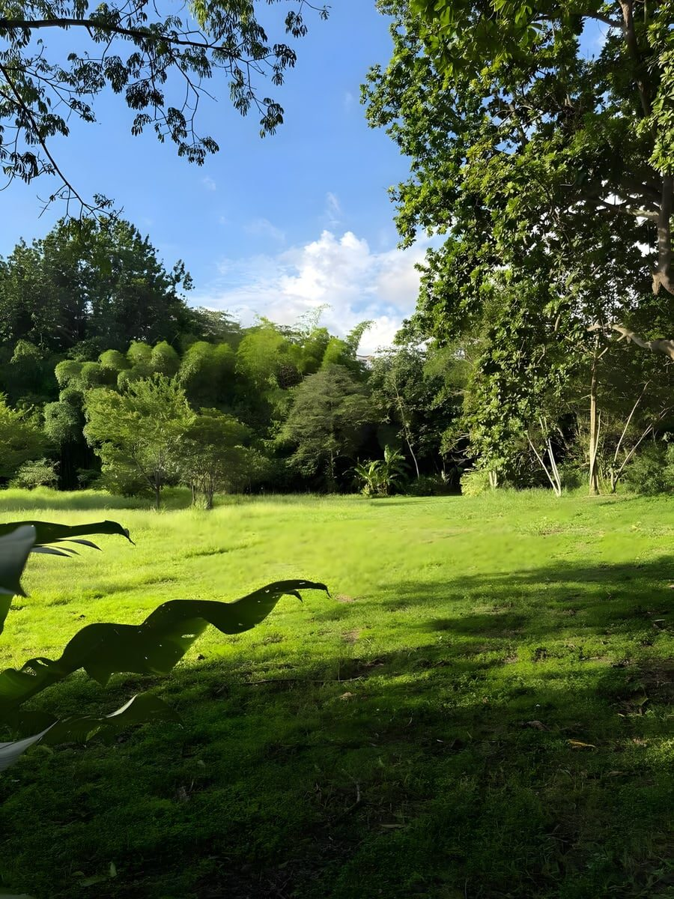
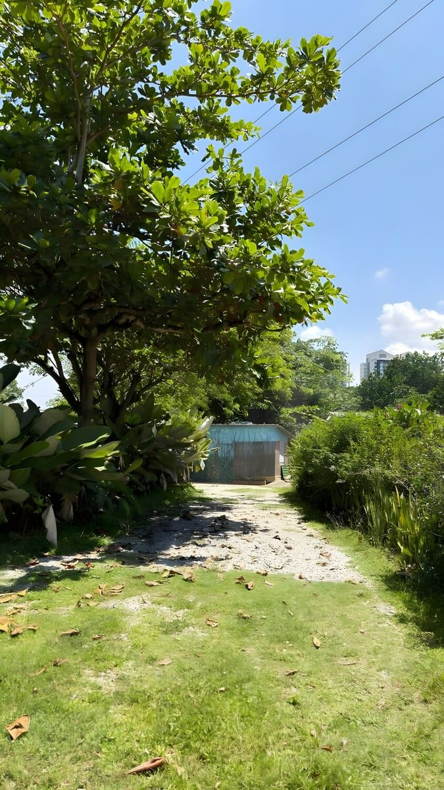
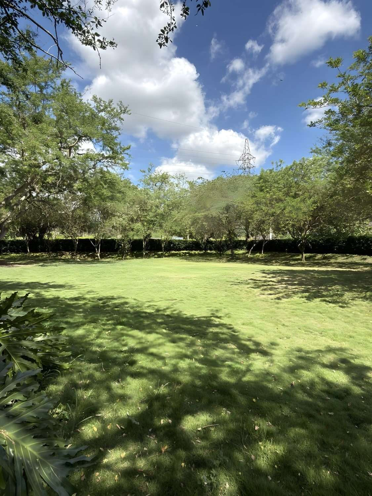
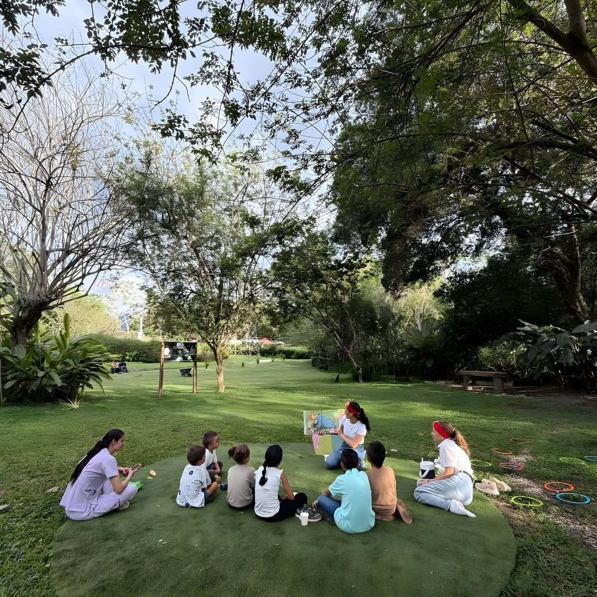
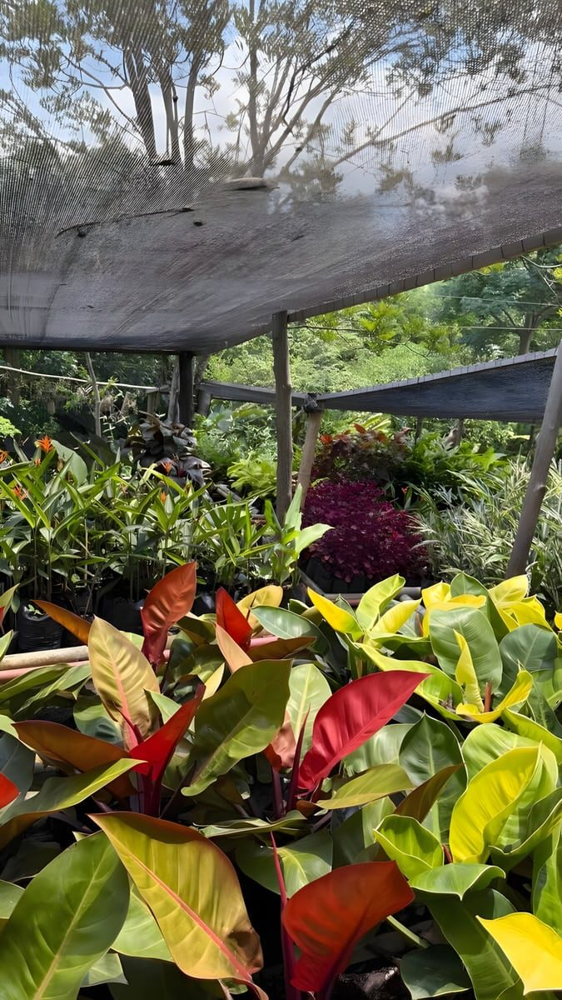
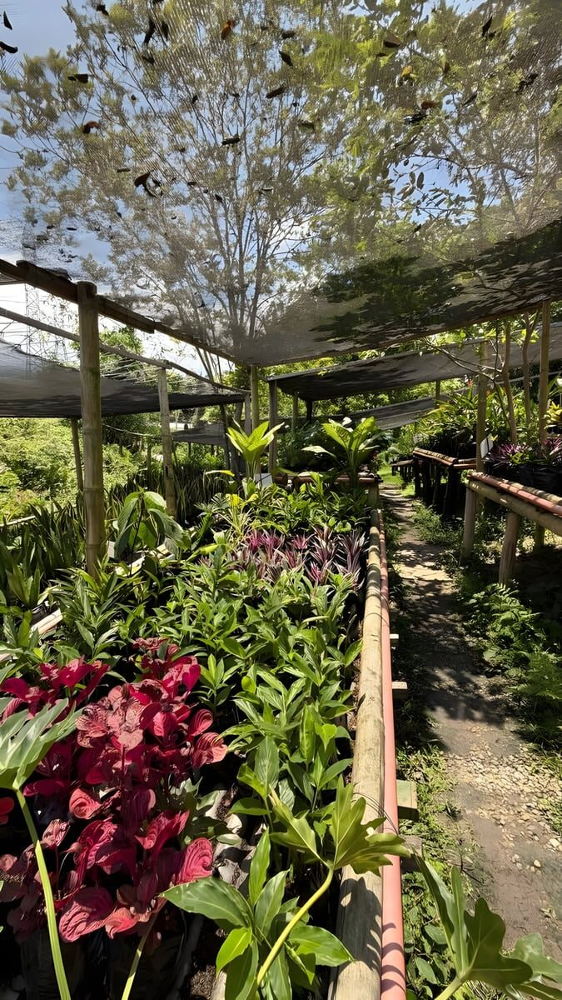

Bodas y matrimonios
Ceremonia al aire libre bajo los árboles y recepción bajo carpa iluminada.

Oasis para la recreación y el bienestar
Cuatro hectáreas de bosque en el corazón del Área Metropolitana de Bucaramanga.
Nosotros
Cuatro hectáreas de bosque entre dos corrientes de agua, a 10,2 km de Bucaramanga.
Vegas del Verde es un terreno arbolado de 4 hectáreas rodeado por la quebrada Aranzoque y el riachuelo La Florida.
Situado en el corazón del Área Metropolitana de Bucaramanga, es un refugio natural que brinda tranquilidad y seguridad en medio del bullicio urbano.
Vereda Río Frío, Floridablanca · Santander, Colombia.
Conocer la biodiversidad


Nuestro compromiso
Creemos en el poder de la conexión y el aprendizaje conjunto. Ofrecemos espacios para actividades que promuevan el bienestar a través de tres compromisos.
Talleres educativos y de jardinería, avistamiento de aves y mariposas, y el Sendero Ecovital para observar de cerca las plantas del lugar.
Reuniones familiares, sociales y corporativas, mindfulness y talleres para el manejo de las emociones, en espacios pensados para el encuentro.
Aquí conviven 101 especies de aves y 347 de plantas, entre ellas el Cedro y el Guayacán Amarillo, valiosos para la conservación.
Incluido en el predio
Abierto de lunes a domingo, de 6:00 a. m. a 10:00 p. m. Cómo llegar
Alquiler de espacios
Dentro de las cuatro hectáreas arboladas del predio hay cinco escenarios que se alquilan por separado: desde un prado abierto para 150 personas hasta un taller techado para 45. Cada uno tiene su propia escala, su propia sombra y su propia luz.


El más grande
150 personas
El prado más amplio del predio: césped parejo y despejado, cerrado por una hilera de árboles y un seto vivo que dan sombra en los bordes. Es el espacio con más aire libre para montar el aforo completo bajo el cielo abierto.
Cotizar Alameda100 personas
Una vega llana de césped, sin construcciones alrededor, con las guaduas y la arboleda cerrando el fondo. Terreno parejo y abierto para montajes al aire libre.
Cotizar La Vega
70 personas
Un claro redondo de césped a la sombra de los árboles, hecho para sentarse en torno a quien conduce: cuentos, charlas, presentaciones y talleres de grupo.
Cotizar Teatrino
Techado
45 personas
Área cubierta con techo de caña y paredes en estera, con guirnaldas de bombillos, piso firme y mesas. El único espacio bajo techo: sirve para pintar, exponer y trabajar en mesa aunque llueva.
Cotizar Taller
30+20 jugadores + espectadores
Superficie plana de césped cortado a ras, delimitada por el seto y por árboles grandes que dan sombra a quien mira desde el borde. Para partidos, juegos y actividad física en grupo.
Cotizar CanchaAplican a los cinco espacios.
4 horas de alquiler base
Con opción de 1 hora adicional.
Incluye sillas y mesas Rimax
Van con el espacio, ya montadas en el predio.
No incluye sonido
El equipo de sonido lo lleva el cliente.
Catering externo permitido
Sólo para eventos.
Se alquila a colegios, empresas y particulares para:
Próximamente: arenero
Consultar disponibilidadCelebraciones y eventos
Cuatro hectáreas arboladas para matrimonios, cumpleaños, recreación infantil y encuentros de colegios y empresas, a diez minutos del bullicio de Bucaramanga.
Alquiler base de cuatro horas, con opción de una hora adicional. Incluye sillas y mesas Rimax; el sonido lo lleva el cliente. Se permite comida y catering externo únicamente para eventos.
Ceremonia al aire libre bajo los árboles y recepción bajo carpa iluminada.
Desde un picnic decorado sobre el prado hasta una fiesta de noche bajo carpa.
Juegos, cuentos al parque y torta sobre el césped, con espacio de sobra para correr.
Integraciones, charlas y salidas pedagógicas con wifi, parqueadero y vigilancia privada.
Bienestar
Creemos en el poder de la conexión y el aprendizaje conjunto. Abrimos nuestros espacios a las prácticas que promueven el bienestar físico, mental y emocional, siempre al aire libre y con los árboles como techo.
Wifi, baños, vigilancia privada y parqueadero para todos los grupos. Horario de lunes a domingo, de 6:00 a. m. a 10:00 p. m.
Agendar una sesión de bienestarEncuentros y cultura
Aprender juntos, celebrar juntos y cuidar lo que nos rodea: educación ambiental y conciencia social, relaciones sanas y respetuosas, respeto por la naturaleza y por los demás.
Cuéntenos qué quiere celebrar o aprender y armamos el plan a la medida.
Escribir por WhatsAppAviturismo y biodiversidad
Cuatro hectáreas arboladas entre la quebrada Aranzoque y el riachuelo La Florida, en el corazón del Área Metropolitana de Bucaramanga. Aquí se han registrado 101 especies de aves y 347 especies de plantas.

Recorrido guiado
Un recorrido guiado para pajareo —avistamiento de aves— y para la observación de las plantas del lugar. El camino está bordeado por guaduas, Búcaro y Caracolí, y sigue la quebrada Aranzoque hasta su encuentro con el riachuelo La Florida.
Quebrada Aranzoque Riachuelo La Florida
Entrada al Sendero Ecovital
$15.000 COP
por persona
Reservas por WhatsApp al 316 675 8362. Abierto de lunes a domingo, de 6:00 a.m. a 10:00 p.m.
Pajareo · Birdwatching
El predio es un punto de aviturismo dentro del Área Metropolitana de Bucaramanga. Entre las 101 especies registradas hay una endémica de Colombia y siete migratorias boreales.
Endémica de Colombia
Ortalis columbiana
Endémica quiere decir que no vive de forma natural en ningún otro país del mundo. Es la especie más singular del registro de Vegas del Verde.
7
Especies migratorias boreales
Siete de las 101 especies registradas son migratorias boreales: aves que descienden desde el norte del continente y encuentran refugio en las cuatro hectáreas del predio.
57 fotografías tomadas dentro del predio por 20 fotógrafos de la comunidad. Cada imagen conserva el crédito de quien la hizo.
Las salidas se hacen por el Sendero Ecovital. Entrada $15.000 COP por persona.
Inventario del predio
Además de las aves, el predio tiene registro de su flora y de la fauna que la acompaña.
Producción y venta de plantas
Espacio de producción y venta de plantas, y espacio de aprendizaje que apoya los talleres de conexión con la naturaleza.



Los clientes pueden adquirir complementos para decorar con plantas sus hogares, oficinas o eventos.
Alojamiento
Una cabaña para ocho personas dentro de las cuatro hectáreas del parque, rodeada de guayacanes, setos de flores y árboles frutales.


Cuatro habitaciones, cada una con su propio baño: la cabaña aloja hasta ocho personas sin que nadie tenga que compartir. Amanecer aquí es amanecer dentro del parque, entre los guayacanes y las 101 especies de aves registradas en el predio.
Las fotografías corresponden a los jardines, senderos y zonas de estar que rodean la ecoposada. Consulte la disponibilidad por WhatsApp: lunes a domingo, de 6:00 a. m. a 10:00 p. m.
Colegios y grupos educativos
Siete espacios para que un curso entero pase el día afuera: escenario, taller, observación de aves y de plantas, polinizadores, sendero y vivero. Educación ambiental con las manos en la tierra, a diez kilómetros de Bucaramanga.


Escenario al aire libre para 70 personas: obras, cuenteros, presentaciones de proyecto y actos de bienvenida.
Zona techada para 45 personas, con sillas y mesas Rimax incluidas. Jardinería, pintura al aire libre y trabajo en grupo bajo sombra.
Pajareo dentro del predio, donde se han registrado 101 especies de aves, entre ellas la Chachalaca Colombiana, endémica del país.
347 especies de plantas y 20 familias botánicas para reconocer en campo, con árboles de conservación como el Cedro y el Guayacán Amarillo.
Avistamiento de mariposas y observación del trabajo de los polinizadores sobre las floraciones del parque.
Recorrido guiado bordeado por guaduas, Búcaro y Caracolí, que sigue la quebrada Aranzoque hasta su encuentro con el riachuelo La Florida.
Ver el senderoProducción y venta de plantas y espacio de aprendizaje: siembra, abonos y cuidado. Registro ICA, resolución n.º 00000819 del 03/02/2025.
El alquiler base es de cuatro horas, con opción de una hora adicional, e incluye sillas y mesas Rimax; el sonido lo lleva el colegio. Armamos la ruta según el grado y el número de estudiantes.
Cómo llegar
Estamos en la vereda Río Frío de Floridablanca, a 10,2 km de Bucaramanga y 10,3 km de Girón: cuatro hectáreas arboladas entre la quebrada Aranzoque y el riachuelo La Florida, en pleno Área Metropolitana.

Coordenadas 7.0574425, -73.1144128
El predio cuenta con parqueadero propio y vigilancia privada.
Si conoces alguno de estos lugares, ya sabes dónde estamos.
Cerca de la ciudad y a la entrada del Santander turístico. Distancias aproximadas.
Reservas y contacto
Las reservas y cotizaciones se atienden por WhatsApp. Escríbenos y te respondemos con disponibilidad, condiciones y todo lo que necesites saber antes de venir.